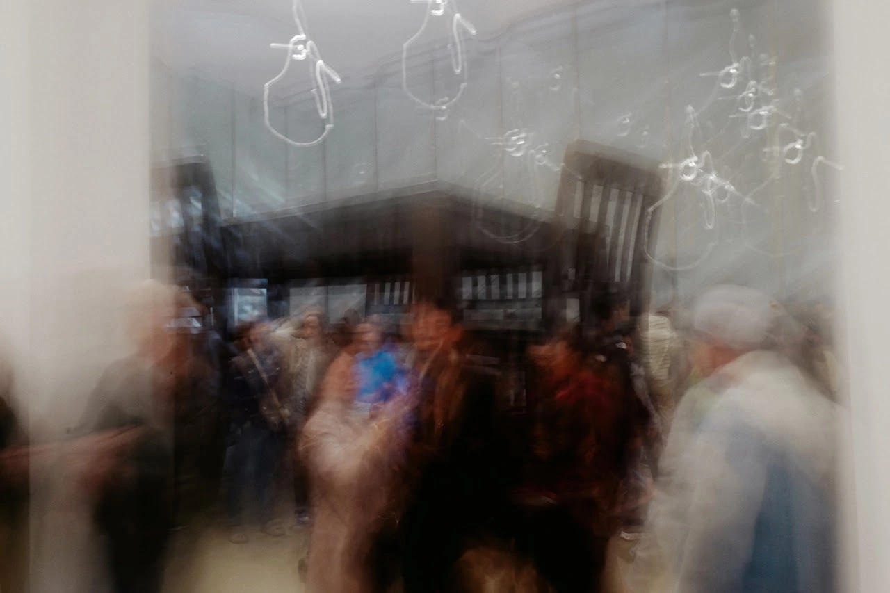
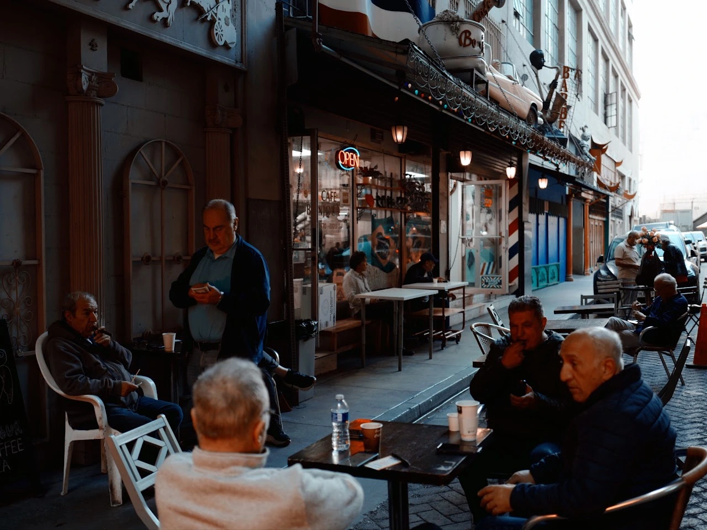

Photography seriesRhythms of ChaosPhotographs taken with my 28mm Leica QSmart ChenImage unavailable. Open the original photograph.01 Image unavailable. Open the original photograph.02 Image unavailable. Open the original photograph.03 Image unavailable. Open the original photograph.04 Image unavailable. Open the original photograph.05Originally published on VegShark.com